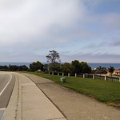

Day 2: Santa Cruz to King City


Day 3: King City to Paso Robles


Day 4: Paso Robles to Santa Maria
-

-

-

-

-

-

Day 5: Santa Maria to Lompoc

Day 6: lompc to Ventura


Day 7: Ventura to Los Angeles


And last but not least…
$15,000,159
That is the total amount that was raised as of the beginning of the event – an absolute record. Fifteen million dollars, going to programs for patients care, prevention and awareness of HIV/AIDS.
What allowed us to pass the $15M mark? Just $159 – almost nothing. It's really just one rider, just one little extra donation. It's your donation. You are just as responsible for this record-setting number as any other volunteer, rider or staff. Thanks, and be proud of yourself!